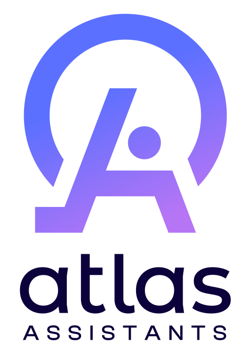
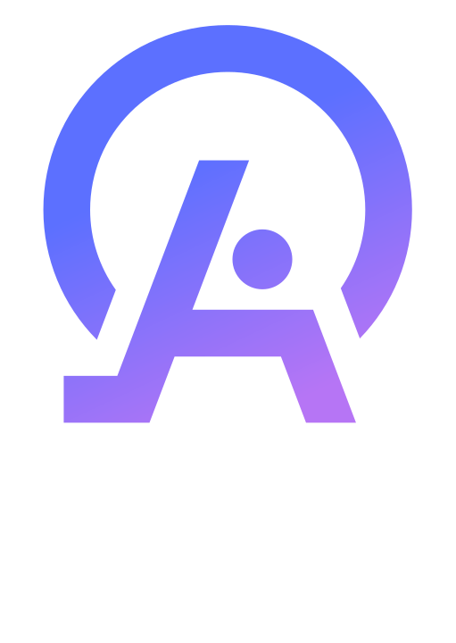
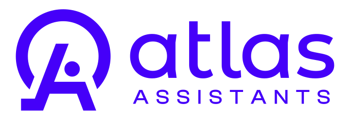

Logo
The four default files, then the full logo package from the designer, each on the surface it was made for. The logo is always an image: never rebuilt with CSS, never typeset, and never paired with typed text to fake a lockup.
Full lockup
Gradient symbol plus wordmark. Use the gradient-symbol lockups only on Pearl White, white, or Deep Blue.
Gradient symbol and Deep Blue wordmark (guidelines page 1). Pearl White or white surfaces.
Gradient symbol and white wordmark (page 3). Deep Blue and dark surfaces.
Symbol only
For favicons, avatars, watermarks, and small or square spots. On Vivid Purple, mid-tone gradients, or photos, use the white symbol.


All-white lockup
For photos, Vivid Purple, and mid-tone gradients, where the gradient symbol loses contrast (guidelines page 4). From the designer's logo package.

On Vivid Purple, gradients, and photos.

Stacked version for square and tall spaces.
Vertical lockup
Symbol above the wordmark. Use it where a horizontal lockup would be too small: square tiles, covers, and social avatars with room.

Gradient symbol and Deep Blue wordmark.

Gradient symbol and white wordmark.
One-color versions
For one-color uses where the gradient cannot reproduce (stamps, embroidery, single-ink print). On screens, prefer the gradient lockups. Shown: Vivid Purple and black. Electric Purple and Soft Blue Violet versions are in the package too, and every colorway exists as horizontal, vertical, and symbol-only, in SVG and PNG (assets/logo/). The wordmark-only version shown small on guidelines page 1 is not in the package; do not typeset it.

One color, on light.
One color, for print and documents.
Clear space
x is the gap between the symbol and the wordmark (guidelines page 2, measured). The page prints 2x and 4.5x labels without a written rule, so the spacing below is an Atlas convention derived from the diagram: at least 2x clear on every side, and about 4.5x on the left and right where space allows. Measured on the master file, x is 166px of a 3001px-wide lockup.
Minimum size
Atlas convention: the lockup is at least 24px tall; below that, switch to the symbol. The symbol is at least 16px.
Symbol 32pxSymbol 16px, minimumRules
- Render the logo as an image file. Never recreate it with CSS shapes or type.
- Never place "atlas" or "Atlas Assistants" as text next to the symbol. The name may appear in prose.
- Switch the file with the surface: dark lockup on light, white lockup on Deep Blue, white symbol on purple and gradients.
- Do not recolor, stretch, rotate, outline, or add effects. The pre-2026 flat-violet logo is retired; flag any instance.